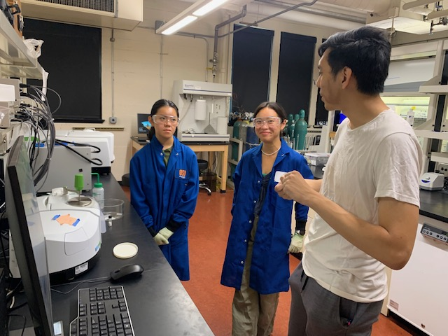
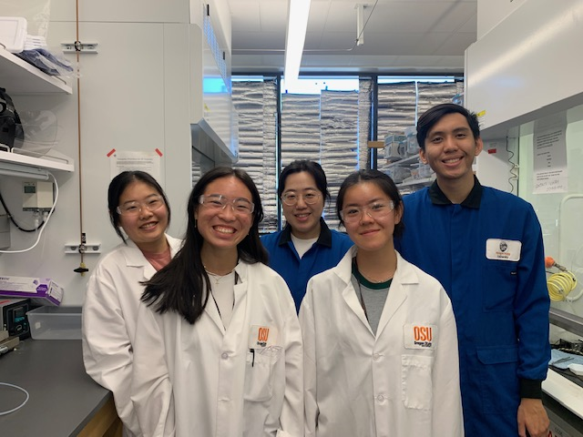

K-12 STEM Outreach
Oregon State University/Northwestern University
During my time in Oregon, I have traveled to underserved elementary schools throughout Oregon and have hosted Outreach events at Oregon State University. I developed and led projects surrounding engineering and chemistry, including: Creating slime with PVA and boric acid, creating gel beads with sodium alginate and calcium chloride, demonstrating super absorpent polymers, demonstrating Non-Newtonian fluids such as Oobleck, silly putty and ketchchup, and creating art with thin-layer chromatography. Here are a list of some of the schools and events I have been a part of:
o AIChE K-12 STEM Showcase, Phoenix AZ November 14th, 2022
o OSU Discovery Day STEM K-8 outreach, OSU campus November 1st, 2022
o Jefferson Elementary School Science Night, Jefferson OR April 13th, 2023
o Family Science and Engineering Night Kennedy Elementary, Keizer OR April 20th, 2023
o Faye Wright Elementary, Salem OR May 4th, 2023
o Green Acres Elementary, Lebanon OR May 11th, 2023
o Cascades Elementary, Lebanon OR May 18th, 2023
o Science, Engineering and Art Day at Goss Stadium, OSU campus May 25th, 2023
o Mountain View Elementary, Corvallis OR June 1st, 2023
o Sunrise Elementary, Albany OR June 8th, 2023
o Beaver Believers Middle School, OSU campus June 26th, 2023
o Summer Experience in Science and Engineering for Youth (SESEY) July 17th - 21st, 2023
Project title: Investigation of MOF ZIF-8 Growth/Synthesis
and Characterization


Science Club
Northwestern University/ Science in Society
Click here for the website
Northwestern Science Club is a NSF-funded outreach program to outreach a term-long science curriculum to middle school students and boys and girls club in Chicago.
Results show show students in engaged in Science Club perform up to 30% higher in measures of skills such as experimental design, data analysis, and making evidence-based conclusions.
o Neurosports Fall 2023
Mentoring Opportunities for Research Engagement (MORE)
Northwestern University
Click here for the website
I am a SIRs mentor at the Niles West High School. The STEM (Science, Technology, Engineering, and Math) Inquiry and Research course is
intended for students who are interested in pursuing a high-level, year long, in-depth study of a science topic of their choosing. A SIRs Research Mentor
is a professional in the corporate or academic community who has a background and expertise in a specific scientific field.
My role as a SIRs mentor involves:
o Helping a student to focus their research topic to a suitable testable question.
o Helping a student to design their final experimental protocol.
o Suggesting key literature for a student to read - a journal article or topic summary.
o Providing starting materials for student research, or ways for the student to obtain these on their own.
o Providing access to an advanced piece of equipment for the final stage of sample analysis.
A project my mentee is currently developing and I am mentoring is understanding how Metal-Organic Frameworks (MOFs) can be used as a a means to capture or sense heavy metal contaminants in wastewater
Morning Mentors
Northwestern University
Click here for the website
Morning Mentors is a collaboration between Nichols Middle School students and graduate students at Northwestern University. Seeing a need in the community for an improvement in fundamental math and reading skills, two NU grad students reached out to Nichols Middle School to volunteer their time. From the pilot program, Morning Mentors has expanded to help many middle school students and has provided numerous graduate students from various departments the opportunity to help out in the community. Each morning, mentors and mentees work together to review basic arithmetic skills, complete homework assignments, and study for tests.